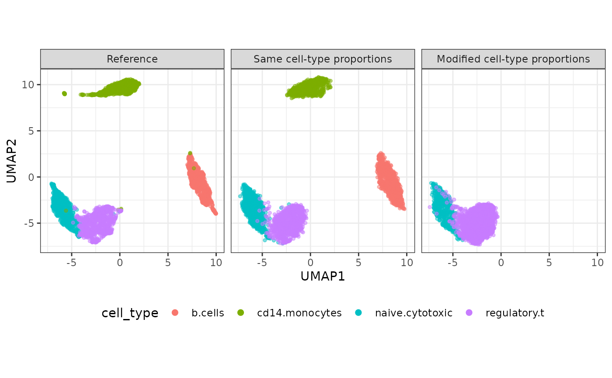

Simulate datasets with cell type and modified cell-type proportions
Dongyuan Song
Bioinformatics IDP, University of California, Los Angelesdongyuansong@ucla.edu
Qingyang Wang
Department of Statistics, University of California, Los Angelesqw802@g.ucla.edu
21 August 2024
Source:../../vignettes/scDesign3-cellType-vignette.Rmd
scDesign3-cellType-vignette.Rmd
library(scDesign3)
library(SingleCellExperiment)
library(ggplot2)
library(DuoClustering2018)
library(scran)
library(tidyverse)
theme_set(theme_bw())Introduction
In this tutorial, we will demonstrate how to use scDesign3 to simulate datasets with cell-type labels as covariates. We will also guide you through modifying cell-type proportions and generating corresponding synthetic data using our step-by-step functions.
Read in the reference data
The raw data is from the R package DuoClustering2018
which contain a set of datasets with true cell type labels.
sce <- get("sce_filteredExpr10_Zhengmix4eq")(metadata = FALSE)
colData(sce)$cell_type = as.factor(colData(sce)$phenoid)To save computational time, we only use the top 200 highly variable genes.
ngene <- 200
logcounts(sce) <- log1p(counts(sce))
temp_sce <- modelGeneVar(sce)
chosen <- getTopHVGs(temp_sce, n = ngene)
sce <- sce[chosen,]Simulation with original cell-type labels
Then, we set the parameter celltype = "cell_type",
indicating that the cell-type labels are stored in the
cell_type column within the colData of the
input SingleCellExperiment object. We also set the
parameters mu_formula and sigma_formula as
cell_type, specifying that in the GAMLSS model, both the
log-transformed mean and dispersion parameters for each gene’s marginal
distribution (in this case, the negative binomial distribution) have a
linear relationship with the covariate cell_type. The
parameter corr_formula is set to cell_type,
meaning that each cell type will have its own unique gene-gene
correlation structure.
set.seed(123)
example_simu <- scdesign3(
sce = sce,
assay_use = "counts",
celltype = "cell_type",
pseudotime = NULL,
spatial = NULL,
other_covariates = NULL,
mu_formula = "cell_type",
sigma_formula = "cell_type",
family_use = "nb",
n_cores = 2,
usebam = FALSE,
corr_formula = "cell_type",
copula = "gaussian",
DT = TRUE,
pseudo_obs = FALSE,
return_model = FALSE,
nonzerovar = FALSE,
parallelization = "pbmcmapply"
)Then, we can create the SinglecellExperiment object
using the synthetic count matrix and store the logcounts to
the input and synthetic SinglecellExperiment objects.
Simulation with modified cell-type proportions
To change the cell-type proportions in the simulated dataset, we need
to use scDesign3’s step-by-step functions. Specifically, we provide a
new set of cell-type labels with the desired proportions in the
extract_para() and simu_new() functions. The
detailed code is shown below.
1. Construct the input dataset.
example_data <- construct_data(
sce = sce,
assay_use = "counts",
celltype = "cell_type",
pseudotime = NULL,
spatial = NULL,
other_covariates = NULL,
corr_by = "cell_type"
)2. Fit regression models for each feature based on your specification.
Here, we set the parameters mu_formula and
sigma_formula as cell_type, indicating that in
the GAMLSS model, the log-transformed mean and dispersion parameters for
each gene’s marginal distribution (in this case, the negative binomial
distribution) has a linear relationship with the covariate
cell_type.
example_marginal <- fit_marginal(
data = example_data,
predictor = "gene",
mu_formula = "cell_type",
sigma_formula = "cell_type",
family_use = "nb",
n_cores = 2,
usebam = FALSE,
parallelization = "pbmcmapply"
)3. Fit a copula, obtain AIC and BIC.
set.seed(123)
example_copula <- fit_copula(
sce = sce,
assay_use = "counts",
marginal_list = example_marginal,
family_use = "nb",
copula = "gaussian",
n_cores = 2,
input_data = example_data$dat
)4. Extract out the estimated parameters so you can make some modifications and use the modified parameters to generate new data if needed.
The cell-type proportions in the inputted dataset are shown below
table(colData(sce)$cell_type) / dim(sce)[2]
#>
#> b.cells cd14.monocytes naive.cytotoxic regulatory.t
#> 0.2511955 0.2447257 0.2483826 0.2556962For demonstration purpose, we generate a set of cell-type labels with
0% of b cells, 0% of CD 14 monocytes, 20% of naive cytotoxic cell, and
80% regulartory T cells. We will supply the data frame
new_ct generated below to the new_covariate
parameter in extract_para() and simu_new().
The new_covariate parameters must include all the
covariates specified in mu_formula and
sigma_formula, and a column called corr_group
indicating the gene-gene correlation structure. Here, since we specify
corr_formula = "cell_type" in
construct_data(), the corr_group column in
new_ct also need to reflect this.
ct_prop <- c(0, 0, 0.2,0.8)
unique_combined <- example_data$dat %>%expand(nesting(cell_type, corr_group))
new_ct <- as.data.frame(lapply(unique_combined, rep,round(ct_prop*dim(sce)[2])))
head(new_ct)
#> cell_type corr_group
#> 1 naive.cytotoxic naive.cytotoxic
#> 2 naive.cytotoxic naive.cytotoxic
#> 3 naive.cytotoxic naive.cytotoxic
#> 4 naive.cytotoxic naive.cytotoxic
#> 5 naive.cytotoxic naive.cytotoxic
#> 6 naive.cytotoxic naive.cytotoxic
table(new_ct$cell_type)/dim(new_ct)[1]
#>
#> b.cells cd14.monocytes naive.cytotoxic regulatory.t
#> 0.0 0.0 0.2 0.8
example_para <- extract_para(
sce = sce,
marginal_list = example_marginal,
n_cores = 1,
family_use = "nb",
new_covariate = new_ct,
data = example_data$dat
)5. Simulate the new count matrix.
set.seed(123)
example_newcount <- simu_new(
sce = sce,
mean_mat = example_para$mean_mat,
sigma_mat = example_para$sigma_mat,
zero_mat = example_para$zero_mat,
quantile_mat = NULL,
copula_list = example_copula$copula_list,
n_cores = 1,
family_use = "nb",
input_data = example_data$dat,
new_covariate = new_ct,
important_feature = example_copula$important_feature,
filtered_gene = example_data$filtered_gene
)Then, we can create the SinglecellExperiment object
using the synthetic count matrix and store the logcounts to
the input and synthetic SinglecellExperiment objects.
logcounts(sce) <- log1p(counts(sce))
simu_sce2 <- SingleCellExperiment(list(counts = example_newcount), colData = data.frame(cell_type = new_ct$cell_type))
logcounts(simu_sce2) <- log1p(counts(simu_sce2))Visualization
set.seed(123)
compare_figure <- plot_reduceddim(ref_sce = sce,
sce_list = list(simu_sce, simu_sce2),
name_vec = c("Reference", "Same cell-type proportions", "Modified cell-type proportions"),
assay_use = "logcounts",
if_plot = TRUE,
color_by = "cell_type",
n_pc = 20)
plot(compare_figure$p_umap)
Session information
sessionInfo()
#> R version 4.4.0 (2024-04-24)
#> Platform: x86_64-pc-linux-gnu
#> Running under: Ubuntu 20.04.6 LTS
#>
#> Matrix products: default
#> BLAS: /usr/lib/x86_64-linux-gnu/openblas-pthread/libblas.so.3
#> LAPACK: /usr/lib/x86_64-linux-gnu/openblas-pthread/liblapack.so.3; LAPACK version 3.9.0
#>
#> locale:
#> [1] LC_CTYPE=en_US.UTF-8 LC_NUMERIC=C
#> [3] LC_TIME=en_US.UTF-8 LC_COLLATE=en_US.UTF-8
#> [5] LC_MONETARY=en_US.UTF-8 LC_MESSAGES=en_US.UTF-8
#> [7] LC_PAPER=en_US.UTF-8 LC_NAME=C
#> [9] LC_ADDRESS=C LC_TELEPHONE=C
#> [11] LC_MEASUREMENT=en_US.UTF-8 LC_IDENTIFICATION=C
#>
#> time zone: America/Los_Angeles
#> tzcode source: system (glibc)
#>
#> attached base packages:
#> [1] stats4 stats graphics grDevices utils datasets methods
#> [8] base
#>
#> other attached packages:
#> [1] lubridate_1.9.2 forcats_1.0.0
#> [3] stringr_1.5.1 dplyr_1.1.4
#> [5] purrr_1.0.1 readr_2.1.4
#> [7] tidyr_1.3.0 tibble_3.2.1
#> [9] tidyverse_2.0.0 scran_1.28.2
#> [11] scuttle_1.10.1 DuoClustering2018_1.18.0
#> [13] ggplot2_3.5.0 SingleCellExperiment_1.22.0
#> [15] SummarizedExperiment_1.30.2 Biobase_2.60.0
#> [17] GenomicRanges_1.52.0 GenomeInfoDb_1.36.1
#> [19] IRanges_2.34.1 S4Vectors_0.38.1
#> [21] BiocGenerics_0.46.0 MatrixGenerics_1.12.2
#> [23] matrixStats_1.0.0 scDesign3_1.1.3
#> [25] BiocStyle_2.28.0
#>
#> loaded via a namespace (and not attached):
#> [1] splines_4.4.0 later_1.3.1
#> [3] bitops_1.0-7 filelock_1.0.2
#> [5] gamlss.data_6.0-2 lifecycle_1.0.4
#> [7] pbmcapply_1.5.1 edgeR_3.42.4
#> [9] rprojroot_2.0.3 lattice_0.22-5
#> [11] MASS_7.3-60.0.1 magrittr_2.0.3
#> [13] limma_3.56.2 sass_0.4.7
#> [15] rmarkdown_2.23 jquerylib_0.1.4
#> [17] yaml_2.3.7 metapod_1.8.0
#> [19] httpuv_1.6.11 askpass_1.1
#> [21] reticulate_1.30 DBI_1.1.3
#> [23] abind_1.4-5 zlibbioc_1.46.0
#> [25] RCurl_1.98-1.12 rappdirs_0.3.3
#> [27] GenomeInfoDbData_1.2.10 irlba_2.3.5.1
#> [29] umap_0.2.10.0 RSpectra_0.16-2
#> [31] dqrng_0.3.0 pkgdown_2.0.7
#> [33] DelayedMatrixStats_1.22.1 codetools_0.2-19
#> [35] DelayedArray_0.26.6 tidyselect_1.2.0
#> [37] farver_2.1.1 ScaledMatrix_1.8.1
#> [39] viridis_0.6.4 BiocFileCache_2.8.0
#> [41] jsonlite_1.8.7 BiocNeighbors_1.18.0
#> [43] ellipsis_0.3.2 survival_3.5-8
#> [45] systemfonts_1.0.4 tools_4.4.0
#> [47] ragg_1.2.5 Rcpp_1.0.12
#> [49] glue_1.7.0 gridExtra_2.3
#> [51] xfun_0.39 mgcv_1.9-1
#> [53] ggthemes_4.2.4 withr_3.0.0
#> [55] BiocManager_1.30.21.1 fastmap_1.1.1
#> [57] bluster_1.10.0 fansi_1.0.6
#> [59] openssl_2.1.0 digest_0.6.33
#> [61] rsvd_1.0.5 gamlss_5.4-12
#> [63] timechange_0.2.0 R6_2.5.1
#> [65] mime_0.12 textshaping_0.3.6
#> [67] colorspace_2.1-0 RSQLite_2.3.1
#> [69] utf8_1.2.4 generics_0.1.3
#> [71] httr_1.4.6 S4Arrays_1.2.0
#> [73] pkgconfig_2.0.3 gtable_0.3.4
#> [75] blob_1.2.4 XVector_0.40.0
#> [77] htmltools_0.5.5 bookdown_0.34
#> [79] scales_1.3.0 png_0.1-8
#> [81] knitr_1.43 rstudioapi_0.15.0
#> [83] tzdb_0.4.0 reshape2_1.4.4
#> [85] nlme_3.1-163 curl_5.0.1
#> [87] cachem_1.0.8 BiocVersion_3.17.1
#> [89] parallel_4.4.0 AnnotationDbi_1.62.2
#> [91] desc_1.4.2 pillar_1.9.0
#> [93] grid_4.4.0 vctrs_0.6.5
#> [95] promises_1.2.0.1 BiocSingular_1.16.0
#> [97] dbplyr_2.3.3 beachmat_2.16.0
#> [99] xtable_1.8-4 cluster_2.1.6
#> [101] gamlss.dist_6.0-5 evaluate_0.21
#> [103] mvtnorm_1.2-2 cli_3.6.2
#> [105] locfit_1.5-9.8 compiler_4.4.0
#> [107] rlang_1.1.3 crayon_1.5.2
#> [109] labeling_0.4.3 mclust_6.0.1
#> [111] plyr_1.8.9 fs_1.6.3
#> [113] stringi_1.8.3 viridisLite_0.4.2
#> [115] BiocParallel_1.34.2 munsell_0.5.0
#> [117] Biostrings_2.68.1 coop_0.6-3
#> [119] Matrix_1.7-0 ExperimentHub_2.8.1
#> [121] hms_1.1.3 sparseMatrixStats_1.12.2
#> [123] bit64_4.0.5 KEGGREST_1.40.0
#> [125] statmod_1.5.0 shiny_1.7.4.1
#> [127] interactiveDisplayBase_1.38.0 highr_0.10
#> [129] AnnotationHub_3.8.0 igraph_1.5.0.1
#> [131] memoise_2.0.1 bslib_0.5.0
#> [133] bit_4.0.5